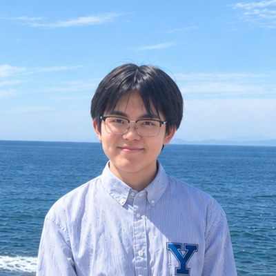
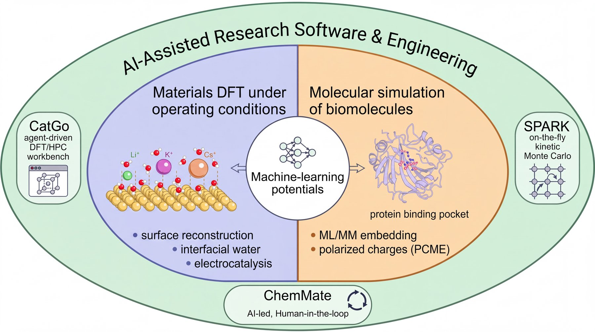
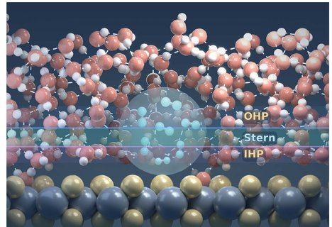
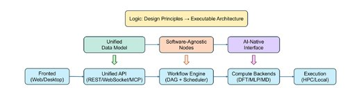
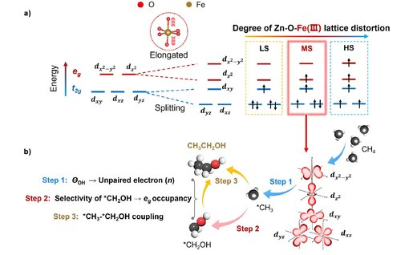
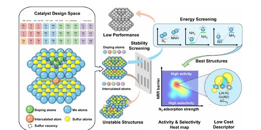
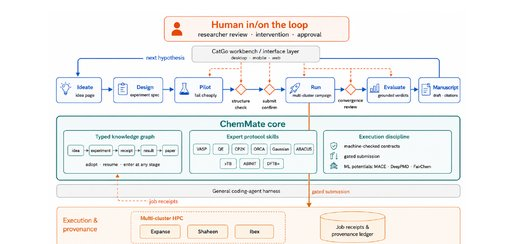

Leshen Zhang
Fudan University
Research Assistant, UC Los Angeles
Email: zhangls23@m.fudan.edu.cn
I am an undergraduate in the Department of Chemistry at Fudan University, advised by Prof. Gengfeng Zheng. I am currently a research assistant in the Department of Chemistry and Biochemistry at UC Los Angeles, working with Prof. Anastassia N. Alexandrova. Previously, I worked with Prof. Wan-Lu Li in the Department of Chemical and Nano Engineering at UC San Diego.
Catalysts and binding sites work under applied potential, solvent, adsorbates and electric fields that reshape their structure and electrostatics, yet most models treat them as static and unpolarized. My research asks how these operating conditions change reactivity and binding, and builds the simulation, machine-learning and AI tools needed to answer that at scale.
I am applying to PhD programs for Fall 2027.
Education
B.S. in Chemistry
GPA: 3.88/4.00
Advisor: Prof. Gengfeng Zheng
Shanghai, China
Research Positions
University of California, Los Angeles · Alexandrova group
Site-resolved C–C coupling on restructured Cu electrodes
University of California, San Diego · Li group
Computational electrocatalysis, interfacial modeling, AI-assisted research software
Fudan University · Zheng group
Photocatalytic methane oxidation (experiment and DFT)
Selected Awards
- Young Students Fund, National Natural Science Foundation of China (Undergraduates), 09/2026 – 07/2027
- Fudan University ‘Syensqo’ Scholarship, 11/2025
- Fudan University ‘Ruiqing’ Scholarship, 11/2024
- Fudan University & Chemours ‘Future of Chemistry’ Scholarship, 11/2024
- Second Prize, 36th China Chemistry Olympiad (National Final), 11/2022
Research

I. First-Principles Calculations for Materials and Catalysis
(a) Surface Reconstruction and Interfacial Structure
Revealed that surface defects regulate interfacial hydrophobic transport by tuning the local cavitation free energy, establishing cavitation thermodynamics as a descriptor linking interfacial water structure to reactivity
Formulated a constant-potential ensemble-sampling methodology that maps site-specific overpotentials and activation barriers across cluster sizes and configurations, bridging local site motifs with microkinetics to identify the ideal size window for Ir clusters
Showed that Au surface geometry governs alkali-cation effects in CO2 reduction: interfacial water reverses the cation effects and propagates them nonlocally to pristine terraces, explaining the volcano-shaped cation dependence on polycrystalline Au
Investigating how kinetically trapped, adsorbate-roughened Cu electrodes catalyze C–C coupling under CO2 reduction, identifying the classes of restructured Cu sites that dominate the coupling rate by site-resolved KMC simulation
(b) Catalytic Mechanisms and Multiscale Modeling
Experiment: developed a Zn–O–Fe catalyst that selectively photo-oxidizes CH4 to ethanol.
Computation: revealed that the medium Fe spin state preferentially stabilizes •CH2OH over •OCH3, explaining why the catalyst with medium-spin polarization favors ethanol
Developed a screening strategy excluding unstable catalysts before DFT and distilled an interpretable SISSO descriptor governing NRR activity and selectivity against HER
Bridged DFT, microkinetic modeling, and mass-transfer simulation in a multiscale model, showing that catalyst morphology governs local mass transport and thereby the apparent activity
II. AI-Assisted Scientific Software
Established an open-source platform unifying the structure → DFT → HPC → analysis chain, and bridged AI coding agents to its workbench, enabling high-throughput calculations
Established an autonomous research collaborator that runs entire projects from ideation to manuscript under human gates, demonstrated in five campaigns with reproducible results
III. Molecular Modeling: Electrostatics in Enzyme Design
Developed the PCME method for ML/MM embedding, which feeds conformation-resolved ML charges of the ligand and binding site into the Poisson–Boltzmann solver, accurately predicting the binding affinity at high calculation efficiency
Established an MLIP-driven workflow that builds AMBER-compatible force fields, matching QM-refined accuracy in hydration free energies at far lower cost and extending to noncanonical residues and metal sites in enzymes
Publications
‡equal contribution · *corresponding author



Preprints & Papers Under Review


Software
Presentations
- 12/2026 (expected)‘‘Defect-Mediated Regulation of Hydrophobic Transport via Cavitation Thermodynamics’’
Chinese Chemical Society, The 16th National Conference of Theoretical and Computational Chemistry, Shenzhen, China - 11/2025‘‘Spin polarization in photocatalysis’’
Fudan University, Undergraduate Student Forum 2025 on Chemistry, Shanghai, China - 11/2025‘‘Switching Photocatalytic Methane Oxidation Toward Ethanol by Tuning Spin States’’
University of Chinese Academy of Sciences, Graduate Student Forum 2025 on Energy Catalysis, Dalian, China